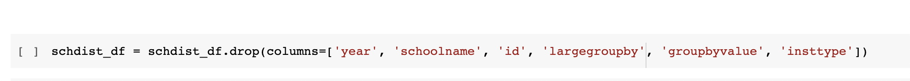
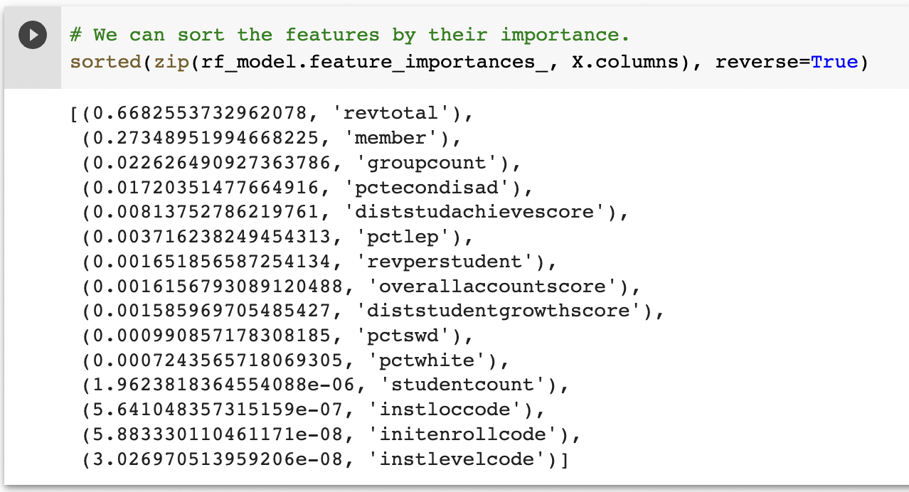

Data Source
Wisconsin Department of Public Instruction
The Department of Public Instruction is the state agency that advances public education and libraries in Wisconsin. Their mission is to ensure that every child, regardless of zip code, has access to quality public education programs, enrichment opportunities, and special education supports, so that all of the children in Wisconsin can be successful. Through the WDPI site, we were able to explore available data pertaining to school performance, budgetary allocation, economic demographics, enrollment in post-secondary education, as well as other public records. With this information we could explore a possible correlation between funding towards extracurricular activities and a students odds of continuing their education. In this analysis, we only took into account information provided for the 2017-2018 school year.
Research Question
Can we predict the best range of funding towards extracurricular activities that promotes continuing education, taking into account economic demographics, district information and overall funding?
Database Processing
Data Manipulation
Initial Schema
The Wisconsin Department of Public Instruction provides a significant amount of data pertaining to demographics, the educational system, funding distribution, etc. Our schema shows the initial data that we had selected to take into consideration in our analysis. The primary key used to link all of the seperate csv files was district ID.

Database Containing High School Information
After combining csv files, we transformed the data by deleting rows with null values, removing columns that didn't impact our analysis, and calculating new rows to more clearly form conclusions, we had a dataframe that contained information such as funding, school performance ratings, and socioeconomic factors.
Database Containing Post-Secondary Information
Much like the database containing hich school performance, demographics and funding, we transformed the data in our post secondary file to pertain more to this particular analysis by removing unwanted columns, and grouping values.
Example of Data Cleaning
Data Exploration
Data Exploration and Initial Analysis
Initial data examination and identification began with making choices on what and how to scrape from the DPI site. Publicly available data goes back more than twenty years, so it was necessary for the team to first narrow down the scope. While a recent two- to three-year scope was identified by the team as desirable to examine trends, the global pandemic had a significant effect on school district reporting and trends, so a decision was made to collect data from the 2017-18, 2018-19, 2019-20, 2020-21, and 2021-22 school years. In this way, the team hoped to focus on multiple year trends and the most recent data, while still allowing for anomalous data from the years affected most by the pandemic. Examination began by pulling all available data for each year, joining the tables to create tables that reflected the longitudinal data for each report in preparation for more detailed examination, database creation, and table joins and querying.
Revenue Impact on Achievement Scores
A very basic analysis of overall funding and its impact on achievement scores can be completed as seen below; however, there are many factors that need to be taken into account to determine a monetary value that ensures the success of each student. To further explore adequet funding that yeilds high achievement scores/continuing education, we will narrow our search to impactful information and make sure data is evenly weighed per student.
Data Availability
While pulling data, the team immediately identified two confounding factors: post-secondary data has not yet been reported and uploaded to DPI for the 2021-22 school year, and school district report card data is not available for the 2019-20 school year.
Data Point Inconsistency
Individual fields within the collected data that purported to show the same data still contained inconsistencies. For example, one report may refer to district 14 as "Adams-Friendship Area" and another as "Adams Friendship Area Schools". Most reports also contained student enrollment data, but the data varied slightly due to the points in time when it was collected. Districts report enrollment on the third Friday of September, but post-secondary enrollment reporting is based on much more dyniamic sources of information. Other important outlier data included district types. Typical extracurricular spending increases at the secondary level. While most districts within the state are K-12 (meaning they serve students from kindergarten through twelfth grade), there are a number of other configurations. For example, the Big Foot Joint School District is a 9-12 only district, serving four separate K-8 districts as a consolidated high school. Although the students all flow up to the same secondary school district, each feeder district maintains it's own costs, revenues, and budgets.
Data Size
In order to gather specific data on extracurricular program, which is coded as "Co-Curricular Activities" in Wisconsin school district financial reporting documents, the team needed to pull full budgetary details for each school district over each year. The State of Wisconsin makes all of this data available, but because the data includes every single coded expenditure for every district for the entire school year, each year is split into multiple files. When combining this data, the team needed to make multiple decisions in order to pare the data down. Initial attempts to join the tables led to creation of a database that was so large even Google CoLab was unable to parse it.

Random Forest Model
The data, once taken in, required some preprocessing to get it ready for machine learning. This involved removing identifying columns and columns where there weas only one unique value throughout the data.
The feature selection was done mostly in cleaning the data, as we, as a team, determined what data was worth considering. We had determined that spending in other areas of school administration were not needed for this analysis. The data was split using train_test_split to ensure a random sample.
Model choice was initially a struggle, which led to a switch part way through the project. While we initially wanted to try a deep neural network, we found that it was the wrong choice. With some advisement from the instruction team, we settled on Random Forests as our machine learning model. While we were unable to find the “sweet spot” of spending, we were able to determine which factors were the most important for our data.
Our accuracy in this model was based on MAE, MSE, and oob (Out of Bag) score. The MAE and MSE were large, but we suspect that was due to the large numbers used in this analysis.
However, the oob score, which is recommended to be between 0.75 and 1.0, was very close to 1.0, suggesting a strong model without overfitting.
Results
Machine Learning Results
Number of Students Analysis
...
Percent Economically Disadvantaged Students Analysis
...
Total Revenue Analysis
...
Overall Conclusion
Once data had been cleaned and filtered down into a set usable with the resources we had available (limiting post-secondary data to only full sets by school and limiting spending and achievement data to only the 2017-18 school year), we were not able to pinpoint a “sweet spot” of extracurricular spending per student. However use of the Random Forests model allowed the team to identify important factors. The three most important factors were total revenue, number of students, and the percentage of economically disadvantaged students. While "group count" showed in our model as an important factor, it is a direct subset of the number of students, so was excluded from our final analysis. After reviewing the results and correlations shown within the model, it was clear that larger, more affluent school districts (those with higher student counts and higher levels of revenue per student) are best poised to spend highly on extracurricular activites.
Several factors merit further analysis using resources not available to a student group. Revenue levels per student are particularly sticky in Wisconsin, given the implementation of revenue growth caps in 1993. Since then, school districts have been limited to increasing their revenues within specific areas to a specific percentage, unless they use a referendum. Arguments have been made that the growth cap has artificially frozen districts into spending models that are not reflective of their current makeup and structure (https://www.wpr.org/rising-referendums-school-funding-101). Further longitudinal dives into the specific revenue levels per student historically may shed light on whether districts that have seen dramatic changes in makeup since the 1993 freeze are able to adjust and provide the same levels of extracurricular spending allowed by districts that have remained unchanged.
Technologies Used for Analysis
Team Members

Bryon Hobbs

Brenda Johansen